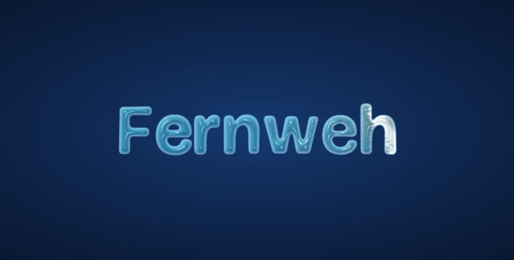
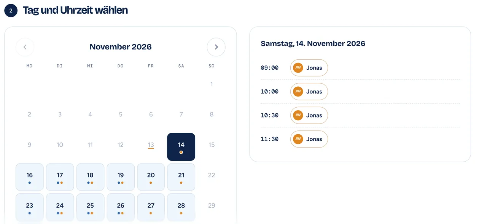

01 Die Ausgangslage
Kleine Reisebüros gegen große Portale.
Wer heute eine Reise sucht, landet meist bei großen Buchungsportalen. Die sind schnell und übersichtlich, aber unpersönlich. Kleine Reisebüros haben genau das, was den Portalen fehlt: Menschen, die beraten, nachfragen und im Notfall erreichbar sind. Online sieht man davon oft nichts. Viele Websites zeigen kaum mehr als Adresse, Öffnungszeiten und ein paar Katalogbilder.
Ich hatte keinen Auftrag von einem Reisebüro. Also habe ich mir eins ausgedacht: ReiseGlück, ein kleines Büro mit zwei Beratern. Die Frage war: Wie kann so ein Büro online genauso einfach wirken wie ein Portal, nur persönlicher?
02 Der erste Eindruck
Fernweh, in Wasser geschrieben.
Eine Reise-Website verkauft zuerst ein Gefühl. Deshalb beginnt die Seite mit einem kurzen Ladebildschirm: Aus Wassertropfen formt sich das Wort „Fernweh“, dann öffnet sich die Seite auf ein Strandfoto von oben. Wer es eilig hat, kann das Intro überspringen, und ohne die nötige Grafikleistung erscheint sofort das ruhige Bild.

Im Strandfoto bewegt sich nur das Wasser. Sand und Palmen bleiben still, weil eine Maske genau festlegt, wo Meer ist. So wirkt das Bild lebendig, aber nicht unruhig. Eine Palme steht vor der großen Überschrift, als würde man selbst am Strand stehen. Wer im System weniger Bewegung eingestellt hat, sieht ein stilles Foto.
03 Was dahinter steckt
Alles, was ein Reisebüro im Alltag braucht.
Schöne Bilder allein bringen keine Anfragen. Der wichtigere Teil liegt unter der Oberfläche: Alle Angebote kommen aus einem einzigen Katalog. Ändert sich ein Preis, stimmt er sofort auf der Preisseite, in den Angebotskarten und im Buchungsformular. Niemand muss drei Stellen pflegen.

Die beiden Berater haben eigene Schwerpunkte und Arbeitstage: Lena Hoffmann für Fernreisen und Kreuzfahrten, Jonas Weber für Familien-, Pauschal- und Last-Minute-Reisen. Wer nicht weiß, zu wem er will, sieht beide Kalender zusammen und nimmt einfach den ersten freien Termin. Genau so funktioniert ein gutes Reisebüro auch am Telefon.
- Buchungsanfrage in vier SchrittenReiseart, Reisezeit und Mitreisende, Kontakt, letzte Prüfung. Eingaben bleiben beim Zurückgehen erhalten.
- Termin mit dem BeraterKostenlose Beratung, 30 Minuten. Einen Berater wählen oder beide Kalender in einem sehen.
- In den eigenen KalenderNach der Buchung lässt sich der Termin direkt als Kalenderdatei übernehmen.
- Bewertungen mit FilterNach Reiseart filtern, nach Datum oder Bewertung sortieren. In der Demo als Beispiele gekennzeichnet.
- Kurze AdressenSeiten ohne „.html“ in der Adresse, leicht zu merken und zu teilen.
- Ohne TrackerSchriften und Bilder auf dem eigenen Server, keine Cookies, nichts wird gesendet.
04 Gedanken und Ziele
Persönlich wirken, ohne langsam zu sein.
Mein größter Gedanke beim Bauen: Effekte dürfen nie im Weg stehen. Das Wasser, die Palme und das Intro sind nur ein Rahmen. Wer auf dem Handy mit schwachem Netz kommt, soll trotzdem in Sekunden Angebote sehen und anfragen können. Deshalb lädt erst das Wichtige und dann die Bewegung, und jeder Effekt hat einen ruhigen Ersatz.
Das Ziel der Demo ist, Reisebüros und anderen beratenden Betrieben zu zeigen, was möglich ist, bevor sie Geld ausgeben. Für ein echtes Büro würde ich echte Angebote, Fotos und Berater einsetzen, die Anfragen per E-Mail oder an das Buchungssystem weiterleiten und Impressum und Datenschutz ergänzen. Das Grundgerüst bleibt gleich.
Was ich mitnehme: Persönlich heißt online vor allem, dass Menschen sichtbar sind. Ein Gesicht, ein Name und ein freier Termin am Donnerstag wirken stärker als jedes Rabattbanner.
Selbst ansehen
Hinweis: ReiseGlück ist eine erfundene Marke und kein Kundenauftrag. Preise, Berater und Bewertungen sind Beispiele, Formulare senden keine Daten, und die Demo ist für Suchmaschinen gesperrt.